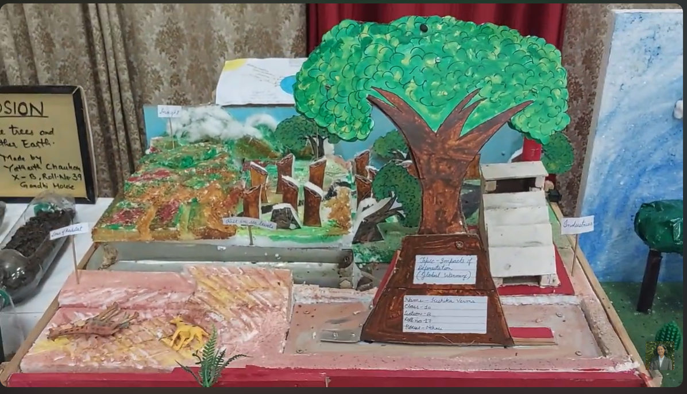

Causes
How deforestation, human activity, pollution, and unsustainable development contribute to climate change.
SCIENCE MODEL • CLIMATE ACTION
There is a working model and a research project covering the causes, impacts, and possible responses to climate change.

Won first prize at a school exhibition.
Climate change, deforestation, causes, effects, and solutions.
Visual educational model with supporting explanation and video.
About the Project
This project focused on the relationship between deforestation and climate change. It was designed to make a large and urgent global issue easier to understand through a physical visual model.
The model explored how the destruction of forests affects rainfall, temperature, biodiversity, ecological balance, and the future of the planet. It also pointed toward solutions and climate action strategies instead of only showing the problem.
For me, the project mattered because it was not only about making a model for an assignment. It was about taking a complex issue and presenting it in a way that could make people stop, look, and think more seriously about it.
Focus Areas
How deforestation, human activity, pollution, and unsustainable development contribute to climate change.
Changing weather patterns, ecological imbalance, habitat destruction, and harm to both people and nature.
How forests support life systems, and what happens when those ecosystems begin to collapse.
Practical solutions, awareness, responsibility, and ways to reduce damage and restore balance.
Project Video
The video presents the model and gives a clearer look at the issues it explores, from the causes and consequences of climate change to the importance of awareness and action.
Watch on YouTube →Research Work
This is the full project document connected to the model, including the broader write-up and supporting work.
Reflection
Winning first prize was meaningful, but what stayed with me even more was the process of thinking deeply about the issue itself. The project taught me how powerful it can be to explain serious real-world problems through simple but thoughtful educational work.
It was one of those projects that made me realize that science models can do more than demonstrate ideas. They can also start conversations, create awareness, and make people care.
This model was one part of a much wider journey of building, learning, and explaining ideas that matter.
View More Initiatives →